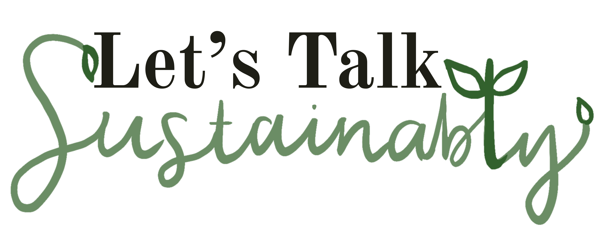

Home
Living Sustainably
Additional Resources
Additional Resources
Books:
How to Save the World for Free
More Information
101 Ways to Go Zero Waste
More Information
On Fire
More Information
Overdressed
More Information
The Sustainable(ish) Living Guide
More Information
How to Avoid a Climate Disaster
More Information
Podcasts:
Social Media
Classes & Additional Learning